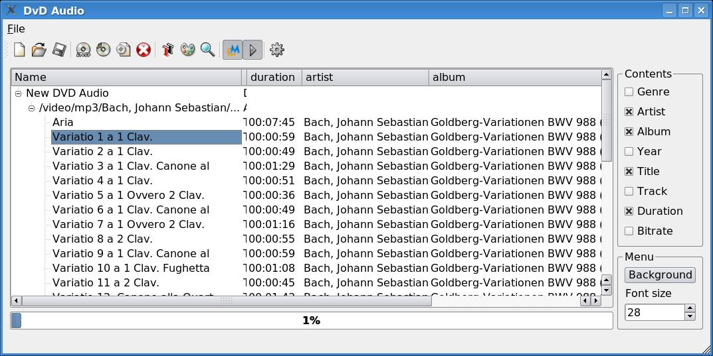
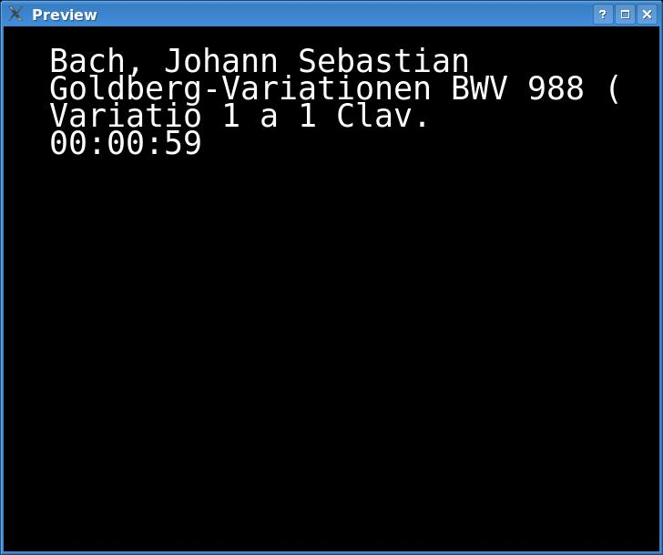

News about release 0.4rc1
I had a request about wav files so I tried to handle these along with
mp3 files.
Hopefully, you can now create a dvdaudio with your wav files without
loss of quality.
Wav files will be resampled if necessary to 48kHz (and for the moment,
only 2 channels files are correctly handled) but otherwise will be
"untouched".
Obviously, no information apart from the filename can be gathered from
wav files, so the still picture that's generated will be poor but it
can't be helped.
I don't know if the transitions between tracks will be smooth enough to
satisfy things like live recordings but maybe you'll let me know...
Lastly, this features adds a dependency to the sox program to concert
wav files to raw pcm (I couldn't get mplayer to generate it, too bad),
but as sox is very common it shouldn't be a problem.
Other improvements in the GUI and bugfixes should also make your life
easier.
History
I created this tool when I had a bunch of mp3 files that would have
taken 5 cds.
I thought, well a DVD can store the whole thing, but how can I listen
to the music afterward ?
I finally thought of creating a king of slide show where the "show" is
only the music.
That way, I can listen those mp3 files on my standalone dvd player.
So how does it works.
Well it has a nice (hopefully) graphical interface written in Qt.
You create a new DVD, in which you add albums, in which you add tracks.
Here is what it looks like :

Most information is gathered from the mp3 file, thanks to the ID3 tags.
However you can edit nearly each field.
When you have finished inserting albums and tracks, just click
"Encode". When encoding is finished, the dvd structure is ready to be
burned in the DVD directory of the temporary folder.
dvdaudio will produce menus with 8 albums titles at most and
buttons to navigate the menus.
An album will be transformed into a dvd title, each track as a chapter,
and on the screen information about the track is displayed.
Here's what a menu looks like :
Additionnal buttons "Next" and "Prev" are added if necessary.
And here is what a track looks like :

Fonts, background images and other kind of things are customizable.
dvdaudio is written under linux, and is heavily dependent on softwares
that are at best rare on windows.
Dependencies :
- Qt
- mplayer/mencoder
- lame
- toolame
- dvdauthor
- ImageMagick
- bash
- mjpegtools
The GUI in itself is as portable as a Qt project can be, so if you have
all these tools available under windows, it may work...
Installation :
$ tar zxvf dvdaudio-<version>.tar.gz
$ cd dvdaudio-<version>
$ qmake dvdaudio.pro
$ make
$ make install
Notes :
- At the moment, only PAL dvds are supported.
- Global overhead is of about 20%. If you know how to reduce it, let me
know.
- Don't forget to put an Arial.ttf file in your ~/.spumux directory if
you want dvdaudio to work.
- Since dvdaudio produces only one titleset, the audio bitrate should
be the same for all albums/titles. However dvdaudio doesn't enforce
this rule yet. Maybe in the next release...